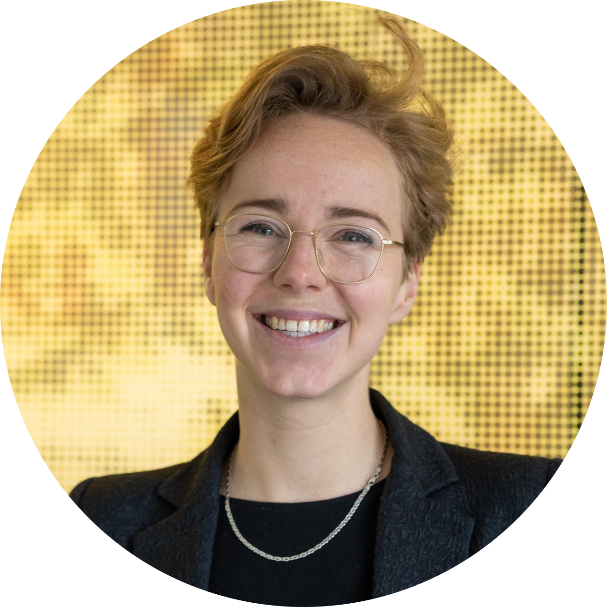

Hanne Oberman
Statistician, interdisciplinarian, open scientist

I am very passionate about ‘dull’ or ‘difficult’ topics such as statistics, programming, and philosophy of science. I’m motivated to use my enthusiasm and expertise to improve the quality of academic research and education. I aspire to (help others to) solve complex real-world problems that require insights from many disciplines and methodologies.
Experience
2023-current
- PhD candidate Methodology and Statistics | Utrecht University | Utrecht, The Netherlands
2022-current
- Faculty ambassador Open Science Community Utrecht | Utrecht University | Utrecht, The Netherlands
2020-2022
- Research and education officer Methodology and Statistics and Julius Center for Health Sciences and Primary Care | Utrecht University | Utrecht, The Netherlands
Education
2023-current
- Graduate school, Interuniversity Graduate School of Psychometrics and Sociometrics (IOPS), an institute for the advanced dissertation training in psychometrics and sociometrics of PhD students in the Netherlands and Belgium.
2018-2020
- MSc Methodology and Statistics for the Behavioural, Biomedical and Social Sciences | Utrecht University | Utrecht, The Netherlands
2018
Post-graduate education International Graduate Summer School of the Global Academy of Liberal Arts | Concordia University, Montreal, Canada
2016-2018
Honours degree Descartes College | Utrecht University | Utrecht, The Netherlands
2014-2018
- BSc Liberal Arts and Sciences | Utrecht University | Utrecht, The Netherlands
Ancillary positions
2021, 2023
- Programme accreditation panel student member, in assessment cluster research masters social and behavioural sciences, Nederlands-Vlaamse Accreditatieorganisatie (NVAO)
2019-current
- Board, Founder and treasurer of the Methodology And Statistics Alumni Society (MASAS). Tasks include planning events and developing the network., MASAS,
2019-2020
- Research assistant Developing novel methods to improve the validity of social scientific prediction. With Dr. Dong Nguyen and Dr. Daniel Oberski. My task was to develop a reproducible pipeline for natural language processing with
RandPython. I mostly focused on the prerequisites for ‘pre-registration’ of these kinds of analyses.
2017-2020
- Teaching assistant, Teaching Methodology and Statistics and Experimental Psychology courses at all undergraduate levels. Tasks varied from practical supervision to lecturing, and from leading workgroups to grading assignments., Utrecht University,
2017-2022
- Representative advisory bodies. E.g., Think tank, Providing feedback and advice to the management teams of the Faculty of Social and Behavioural Sciences, student council Faculty of Social and Behavioural Sciences research masters, Programme advisory committee MSBBSS, president of the student council Liberal Arts and Sciences
2014-2018
- Board and committees, I have been an active member of the study association Liberal Arts and Sciences, USLAS Atlas. Positions include vice-president of the association, president of the parents’ day committee, secretary of the travel committee, and student-mentorship., USLAS Atlas,
2012-2017
- Extracurriculair sidelines: Hospitality, food sector, and volunteering. As a student, I have always worked part-time in restaurants and at a sustainable food start-up. Next to that, I have volunteered at an animal shelter and several cultural festivals. Tasks include supervision of a team of 5-10 colleagues, customer service, and account management., E.g., Dudok Rotterdam,
Grant and awards
2021
- Open Science Fund, This project aims to make the MICE functionality available through a restful API to accommodate a wider user group.
2022
- Open Science Fund, The dessert package allows you to automatically generate methodological appendices for your research workflows. https://www.gerkovink.com/dessert
2019
- Best poster, Social and Behavioural Sciences Graduate Poster Fair. Poster presentation about scientific practices around non-significant results: ‘Will You Publish Null Papers?’, in collaboration with Jerry Wenzel., Utrecht University,
2018
- Fellowship award, Global Academy of Liberal Arts Annual Conference ‘Creativity and the Liberal Arts’ (HUMA 887)., Concordia University, Montreal,
Conferences
2023
- Paper presentation, European Congress of Methodology, ’Towards a standardized evaluation of imputation methodology: potential pitfalls in simulation studies and a proposed course of action, EAM 2023, Ghent, Belgium
2021
- Late-breaking work in progress, IEEE VIS workshop ‘VisComm: Visualization for Communication’. Title: ‘Visualizing Uncertainty Due to Missing Data’., VIS 2021,
2021
- Community led session, Open Science Festival. Title: ‘Pre-registration of Data Science Studies’., OSF 2021
2020
- Online paper presentation, International Conference on Machine Learning (ICML) workshop ‘ARTEMISS: The Art of Learning with Missing Values’. Title: ‘Missing the Point: Non-Convergence in Iterative Imputation Algorithms’., ICML 2020
2019
- Pre-study poster presentation, Society for the Improvement of Psychological Science (SIPS) conference. Title: ‘ShinyMICE: Developing a Missing Data Evaluation Suite (Master’s Thesis Methodology and Statistics)’., SIPS 2019,
2018
- Showcase, Global Academy of Liberal Arts (GALA) Annual Conference. Title ‘Creativity and the Liberal Arts’., GALA 2018,
2017
- Invited talk, European Liberal Education Student Conference (LESC). Title: ‘Creating Creativity? Assessing adaptive expertise in Liberal Education students’., LESC 2017
2016
- Poster presentation, Utrecht Platform for Creativity in Education (UPCE) conference. Title: ‘Assessing Adaptive Expertise in Higher Education Students’., UPCE 2016
2016
- Workshop, National Interdisciplinary Education (NIE) Conference. Title: ‘The interdisciplinary research process in practice’., NIE 2016
Teaching and supervision
Courses taught: ’Applying Research Methods and Statistics’ (practicals), ’Advanced Research Methods and Statistics’ (developing assignments, grading, workgroups, practicals), ’Doing a Qualitative Research Project’ (developing assignments, lecturing, workgroups, practicals), ’Qualitative Inquiry in Everyday Life’ (lecturing, workgroups).
‘TOE’, ‘MET24’ (UCU-cursus kwalitatief onderzoek), het kwalitatieve deel van ‘VOS’, en cursussen uit de M&S-minor ‘DaQRP’ en ‘MDaCE’.
2016-2017: “Leren lesgeven in het hoger onderwijs’ practica experimenteren & registreren with opensesame & matlab
2017-2018: ‘Practicum cognitieve en neurobiologische psychologie’ in matlab ’Practicals in cognitive and neurobiological psychology
’Experimenting and registering’ (practicals). Training in teaching and presentation skills by Prof. Dr. Susan te Pas and Dr. Ignace Hooge.
Languages
Dutch, English, R, Python, Matlab